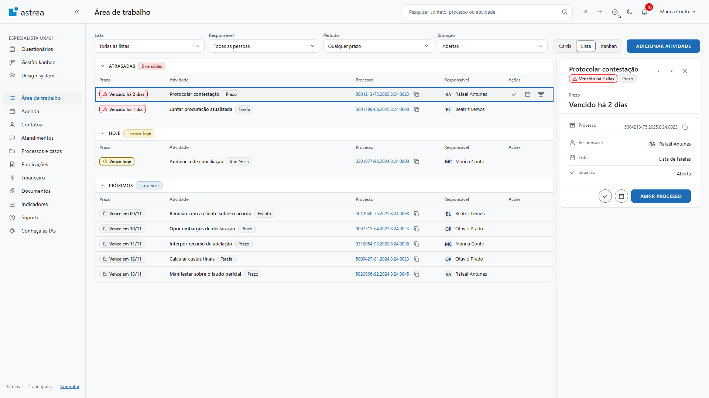
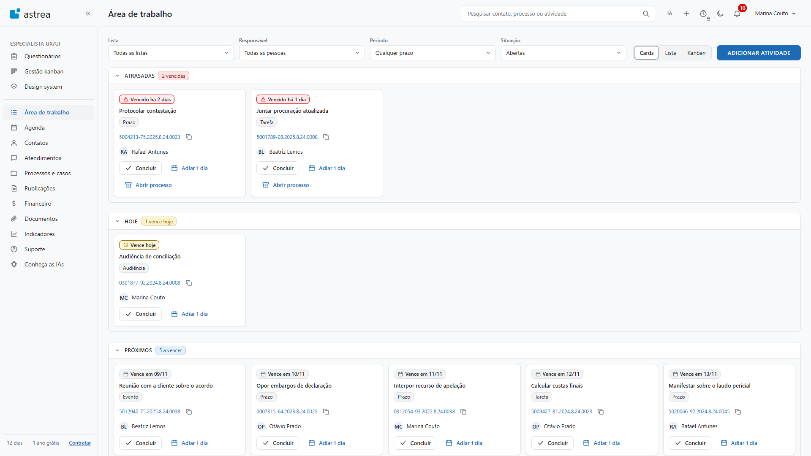

Quatro componentes da Questão 3, com os estados que o design system mostra. Cada célula leva o mesmo [data-estado] de prototipo/design-system.html. Variação muda o dado, e o estado muda a interação. Os primitivos espelham o CSS do Astrea, e o hex só existe no bloco de primitivos. Todo nome e número é fictício.
A tela abre em todas as listas, com as seções Atrasadas, Hoje e Próximos. Os filtros ficam numa linha. A visão Lista usa a tabela do DS, uma por seção, com as mesmas colunas. O clique na linha abre o painel de detalhe ao lado.


DS.tabelaPadrão para lista longa. Na Área de trabalho, cada seção tem uma tabela com as colunas Prazo, Atividade, Processo, Responsável e Ações. Larga, ela rola dentro do quadro e nunca a página.
[data-estado="default"]
| Prazo | Atividade | Processo | Responsável |
|---|---|---|---|
| Vencido há 2 dias | Protocolar contestação | 5004213-75.2025.8.24.0023 | Rafael Antunes |
| Vencido há 1 dia | Juntar procuração atualizada | 5001789-08.2025.8.24.0008 | Beatriz Lemos |
[data-estado="hover"]
| Prazo | Atividade | Processo | Responsável |
|---|---|---|---|
| Vence em 09/11 | Reunião com a cliente sobre o acordo | 5012940-75.2025.8.24.0038 | Beatriz Lemos |
| Vence em 10/11 | Opor embargos de declaração | 0007315-64.2023.8.24.0023 | Otávio Prado |
[data-estado="carregando"]
| Prazo | Atividade | Processo | Responsável |
|---|---|---|---|
[data-estado="vazio"]
| Prazo | Atividade | Processo | Responsável |
|---|---|---|---|
Nenhuma atividade com estes filtros.Ajuste os filtros para ver mais. | |||
| Propriedade | Token | Regra |
|---|---|---|
rotulo, colunas, linhas | Altura da linha --density-row 36px. Cabeçalho --font-size-label, --color-text-muted | Rótulo obrigatório: vira o nome acessível do quadro |
| Hover | --color-bg-subtle na linha inteira | Linha vazia e esqueleto não reagem |
densidade | Variação Compacta, linha de 28px | Mesma tabela, menos altura |
| Linha escolhida, na tela | aria-selected="true", fundo --color-bg-subtle, barra --color-action | Ainda sem célula no DS. Hoje o estado selecionado existe só na Linha de atividade |
DS.chipPrazoO primeiro dado da atividade. Vencido, hoje e próximos se distinguem pelo texto. Fundo e ícone reforçam (PA-34). O componente recusa chip sem rótulo, porque a cor nunca fala sozinha.
[data-estado="default"]Vence em 13/11| Propriedade | Token | Regra |
|---|---|---|
estadoPrazo | Vencido: fundo --color-bg-danger, borda --color-text-danger. Hoje: --color-bg-warning e --color-text-warning | Texto sempre em --color-text-default. A cor reforça, não informa |
rotulo | --font-size-label 12px, peso 600, números tabulares | Obrigatório: "Vencido há 2 dias", "Vence hoje", "Vence em 13/11" |
| Altura e raio | --size-chip 22px, --radius 8px | Concluída nunca alerta: borda --color-text-success e peso normal |
DS.cardAtividadeUnidade autônoma: foca, abre e age. Serve as visões Cards e Kanban da Área de trabalho. As booleanas mostrarPrazo, mostrarProcesso, mostrarResponsavel e mostrarTags são propriedades, não variantes.
[data-estado="default"][data-estado="hover"][data-estado="active"][data-estado="foco"][data-estado="carregando"]| Propriedade | Token | Regra |
|---|---|---|
| Fundo, borda, raio, sombra | --color-bg-surface, --color-border-default, --radius-card 8px, --shadow-card | Hover e ativo trocam a borda por --color-action |
| Foco | --color-focus, 2px, deslocado 2px | A mesma regra de foco do sistema inteiro |
| Número do processo | --color-action, com botão de copiar ao lado | copiarNumero liga o botão. Copiar custa 1 clique |
DS.painelDetalheLista à esquerda, detalhe ao lado, sem modal. As setas trocam a atividade sem fechar o painel. Na Área de trabalho, o divisor muda a largura entre 300 e 560px.
[data-estado="default"]
Prazo
Vencido há 2 dias
[data-estado="foco"], no botão de esconder
[data-estado="carregando"]
[data-estado="vazio"]
[data-estado="oculto"]: só o botão de reabrir
| Propriedade | Token | Regra |
|---|---|---|
titulo, chips | Título --font-size-dialog 18px, peso 600 | O leitor de tela anuncia o título na troca de item |
destaque | --font-size-title 20px | Na Área de trabalho, o destaque é o prazo |
linhas | Rótulo --color-text-muted, divisor --color-border-default | Sem valor, aparece o traço |
acoes | Botões redondos de ícone, borda --color-border-strong. O último é o primário | Cada botão de ícone tem dica. "Abrir processo" é o primário |